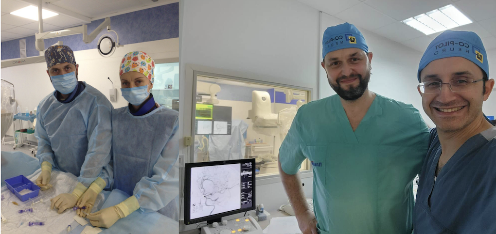
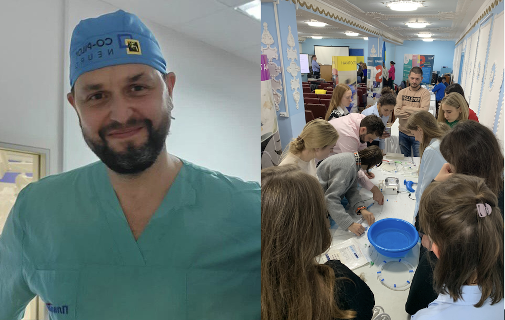
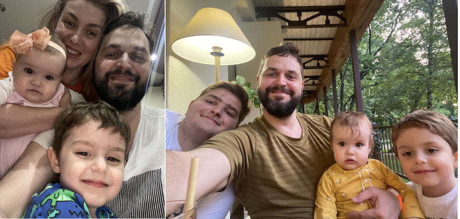

IMAGES can define a war. They can evoke an emotion in a second, speak for those who have been silenced by conflict, and issue a global call to see, believe and act.
Starting in February 2022, history’s most documented war has produced countless haunting images, from the anguish of sundered families to the tender homecomings of injured fighters. Dr Yurii Cherednychenko’s war images are however unlike any you have seen before. They are of the rivulets and runnels made by contrast dye on a cerebral angiogram. They show the damage made by mine blast injuries and gun shot trauma, the trail of devastation left by mine fragments and shell splinters that have breached the skull at thousands of metres per second.
Catastrophic in themselves, penetrating head and neck wounds are associated with vascular injuries that can cause ischaemic stroke, and many of Dr Cherednychenko’s war images are of radical new procedures to prevent secondary stroke. The proximity of his hospital to the frontline both in the east and to the south has seen him become, in under two years, the world’s leading expert in combat trauma and stroke.
Soldiers and civilians are brought to him directly from the battlefield and the cities under shelling. Most are combatants between the ages of 20 and 50. But among the images he recently shared with surgeons in Chicago there was also an 81-year-old woman with mine blast trauma, and a nine-year-old boy wounded during artillery shelling of his home who had already suffered an ischaemic stroke by the time he was brought to Dnipro Regional Hospital.
“We prevented the next stroke,” Dr Cherednychenko says. His young patient recovered well but faces a precarious future. His parents had not survived the attack
.
Ukraine’s thrombectomy teacher
Yurii Cherednychenko is a man of many firsts. The first aneurysm embolisation with detachable coils in Ukraine, the first stent-assisted coiling of a cerebral aneurysm, the first flow-diverter implantation, and so on. And on. In 2016, he carried out the first mechanical thrombectomy in Ukraine, giving a local football hero a second chance at life. In 2017 he was among the first Ukrainian doctors to work with the Angels Initiative and eventually the first to implement Angels checklists and recommendations throughout the stroke pathway. He remains involved with Angels as a speaker at events and an advocate for the impact Angels can have on the quality of care for patients with acute stroke.
“Yurii has always been at the forefront of stroke care,” says Dr Dmytro Lebedynets who is head of the stroke centre at Feofaniya Hospital in Kyiv and serves alongside Dr Cherednychenko on the board of the Ukrainian Stroke Medicine Society.
He rattles off a list of his gifted colleague’s accomplishments: “His thrombectomy rate is 18 percent, the thrombolysis rate at his hospital exceeds 20 percent, he treats more than 1,000 patients per year.”
As well as being personally responsible for one fifth of all mechanical thrombectomies carried out in the country, Dr Cherednychenko is Ukraine’s thrombectomy teacher. He designed the first educational course for interventional neuroradiologists in Ukraine in 2019, and created his own school for endovascular treatment whose alumni Dr Lebedynets describes as a “community of trained people who now perform thrombectomies all over Ukraine”.
He is involved in developing national guidelines for stroke, and in his region has organised ambulance-to-hospital pathways with outstanding results, and overseen the implementation of stroke scales (RACE and its Ukrainian equivalent MOZOK2) that can detect large vessel occlusion in the prehospital phase.
And now his expertise in combat brain injury, the mixed blessing of a terrible war, is sought after by physicians from outside Ukraine, including France, Israel and the US.
“He is the first person to see patients who sustain vessel injuries in the war,” Dr Lebedynets continues. “He’s the only one who treats them, and he has treated the largest number of cases of head and neck vascular injuries in the world.”
It is a grim milestone that testifies to the human cost of a brutal war, but it is not yet the full story. Located 391 km southeast of the Ukranian capital Kyiv, Dnipro has become a new home for many people fleeing from the war further to the east. The unbearable stress affecting this refugee population is partly the reason why Dr Cherednychenko’s hospital has seen a spike in civilian strokes. He describes their approach to revascularisation with thrombectomy or thrombolysis as aggressive: “We treat all the patients that we can.”

A strange fact
Since we’re talking about stress, is there a “treatment” for the wear and tear of more than 600 days on the frontline of combat medicine? Yes, there is.
“I am in Ukraine with my family,” Dr Cherednychenko says. “I have three children and this supports me. I do not have enough time for my family, unfortunately, but sometimes for me it is enough to see my sleeping children. They are calming for me.”
But because everything in a war is in some way absurd and self- contradictory, the soothing sight of sleeping children also means fearing for their safety during a missile strike. He was performing an operation when the most recent attack occurred and had no way of knowing they were safe until after the surgery ended.
It had been his childhood dream to become a neurosurgeon, Dr Cherednychenko says. “No other kind of doctor. As a child I thought a neurosurgeon was a specialist who had access to all the secrets of the brain and human consciousness. Having matured a little, I realised that this was a childish illusion. But some kind of imprinting into this profession has already happened. And indeed many incredible secrets are revealed from this point.”
The job of finding new ways to repair the brain, is however an absorbing one. “I like this craft,” Dr Cherednychenko says. “It is very interesting and it is developing very quickly, it keeps me sharp. And my job, to be honest, is also my main hobby. It is absolutely incredible to feel involved in the miracle of the patient returning to this world and to himself.”
There’s another incongruity in the story of a local lad raised in Dnipro where his mother was a teacher and his father constructed rockets and missiles. The same missiles that Russia is now raining down on Ukraine, and depositing cruel fragments on angiograms.
“It’s a strange fact,” he observes quietly.
A final paradox attends Dr Cherednychenko’s growing fame as a combat neurosurgeon. It is, after all, the consequence of a bitter war and untold suffering. At the same time it has moved boundaries in the field of penetrating trauma, expanding possibilities for undoing the heinous work of wars.
After all, only a fool would imagine that this was the last or the only battle.